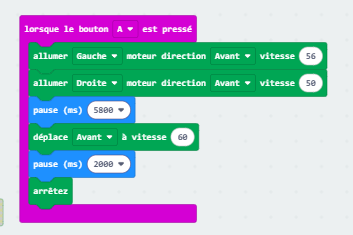

Présentation
Bienvenue sur notre site ! Dans ce projet de technologie, nous allons vous présenter le robot que nous avons programmé ainsi que les différents programmes que nous avons créés pour qu'il accomplisse plusieurs missions.
3ème 3
Notre-Dame de Bressuire
2025-2026
Notre Robot
Voici une photo du robot sur lequel nous avons travaillé en classe :

Nos Programmes
Voici les programmes que nous avons créés pour faire fonctionner mon robot :
Programme 1 : Sortir du labyrinthe grâce à une trajectoire programée
Ce programme fait avancer le robot sur une trajectoire déjà programmée pour le faire sortir du labyrinthe.
Programme 2 : Suivre une ligne noire
Ce programme permet au robot de suivre une ligne tracée au sol grâce à ses capteurs de luminosité.
Programme 3 : Avancer pour faire tomber des quilles
Ce programme fait avancer le robot.
Programme 4 : Sortir du labyrinthe grâce à des capteurs infrarouges
Ce programme fait sortir le robot du labyrinthe grâce à ses capteurs infrarouges.
Conclusion
Ce projet nous a permis d'apprendre plein de choses sur :
- La programmation par blocs avec makecode
- Le fonctionnement des capteurs
- Comment résoudre des problèmes étape par étape (algorithme)
- Le travail en équipe
Nous avons beaucoup aimé ce TP parce que nous avons pu voir notre programme fonctionner sur un vrai robot !